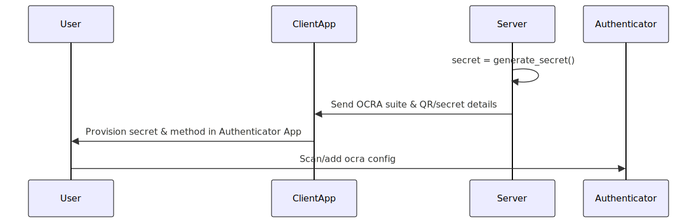

OneTimePasswords
Documentation for OneTimePasswords.
A minimal, fast Julia module for generating and verifying
- counter-based OTP (HOTP, RFC 4226),
- time-based OTP (TOTP, RFC 6238),
- challenge-response OTP (OCRA, RFC 6287).
Implements RFCs 4226, 6238, and 6287. Compliance not guaranteed. Not audited.
Also provides provisioning URIs and SVG/PNG QR-codes for authenticator apps.
Security Considerations
This package implements only the algorithmic core of HOTP, TOTP, and OCRA. It is stateless — it does not include rate limiting, lockout, replay tracking, throttling, or secure memory handling.
Applications or servers using this library must enforce their own:
- Retry limits and account lockouts
- Artificial delays or backoff to slow brute-force attempts
- Replay prevention within each time window
- Secure storage of shared secrets
- Transport of OTPs and secrets only over TLS or secure channels
Secrets are emitted as Base32‑encoded immutable Strings. They cannot be zeroized. For stricter security, store secrets as Vector{UInt8} and overwrite them with fill!().
Timing and Side‑Channel Notes
- Code comparisons are constant‑time.
- Base32 decoding, HMAC, and key handling are not constant‑time.
- This package is not hardened for hardware tokens, HSMs, or multi‑tenant hostile environments.
Installation
using Pkg
Pkg.add("OneTimePasswords")How It Works
OneTimePasswords.jl provides secure one-time password (OTP) workflows based on shared secrets between your server and a user's authenticator app. The process involves two main stages: Provisioning (Registration) and Verification (Login/Challenge).
Provisioning (Registration):
- The server generates a cryptographically strong secret for each user.
- This secret is shared with the user, usually by displaying it as a QR code in your client application.
- The user scans or manually enters this secret in their authenticator app (such as Google Authenticator, Microsoft Authenticator, or FreeOTP).
- This process securely links their app to your server.
Verification (Login/Challenge):
- When authentication is required, the user generates a code with their authenticator app and submits it through your client application.
- The server uses OneTimePasswords.jl to verify the submitted code, checking it against the user's stored secret (and time or challenge/counter, depending on the method).
- If the code is valid, authentication succeeds.
OneTimePasswords.jl supports multiple OTP standards:
- HOTP: Event/counter-based, the code increments with each use.
- TOTP: Time-based, codes change periodically (e.g., every 30 seconds).
- OCRA: Challenge-response, for complex scenarios like transaction signing.
The core idea: the secret never leaves the server or user's device after provisioning; only short-lived codes are transmitted during login.
HOTP Workflow
Registration (Provisioning): The server generates a random secret and creates a provisioning URI (or QR code). The client application displays this QR code or secret, which the user scans or enters into their authenticator app.

Authentication (Login): The user requests a one-time code from their authenticator app, which generates a code based on the shared secret and a counter. The user submits this code (along with any identifier) via the client application, which passes it to the server. The server verifies the code using the stored secret and counter.

TOTP Workflow
Registration (Provisioning): The server generates a random secret and provides a provisioning URI or QR code. The user scans this in their authenticator app to set up time-based codes.

Authentication (Login): At login, the user opens their authenticator app and reads the current code. The code is entered via the client application and sent to the server, which verifies it using the stored secret and current time.

OCRA Workflow
Registration (Provisioning): The server generates a secret and OCRA suite definition and makes these available to the user as a QR code or configuration details. The user provisions this in their authenticator app.

Authentication (Challenge-Response): For authentication or specific actions (like approving a transaction), the server generates a challenge and presents it to the user. The user inputs the challenge into their authenticator, which generates a response code. The user submits this code (and usually the challenge) back to the application, which forwards it to the server for verification.
Quickstart
julia> using OneTimePasswords
julia> secret = generate_secret();
julia> code = generate(HOTP(), secret, 0; digits=6);
julia> verify(HOTP(), secret, 0, code)
true
julia> account = "alice@example.com";
julia> issuer = "MyApp";
julia> urilink = uri(HOTP(), secret, account, issuer;
digits=6, counter=0, algorithm=:SHA1);
julia> svg = qrcode(urilink; format=:svg, size=200, border=2);
julia> tmp_svg = tempname() * "hotp.svg";
julia> open(tmp_svg,"w") do io
write(io, svg)
end;
julia> tmp_png = tempname() * "hotp.png";
julia> pngfile = qrcode(urilink; format="png", path=tmp_png);
julia> isfile(pngfile)
true
julia> # qrcode(urilink; format=:ascii, border=1) # Print in the REPLjulia> using OneTimePasswords, Dates
julia> secret = generate_secret();
julia> code = generate(TOTP(), secret; period=30, digits=6);
julia> verify(TOTP(), secret, code; allowed_drift=Second(30))
true
julia> account = "alice@example.com";
julia> issuer = "MyApp";
julia> urilink = uri(TOTP(), secret, account, issuer; digits=6,
period=30);
julia> svg = qrcode(urilink; format=:svg, size=200, border=2);
julia> tmp_svg = tempname() * ".svg";
julia> open(tmp_svg, "w") do io
write(io, svg)
end;
julia> tmp_png = tempname() * ".png";
julia> pngfile = qrcode(urilink; format="png", path=tmp_png);
julia> isfile(pngfile)
true
julia> # qrcode(urilink; format=:ascii, border=1) # Print in the REPLjulia> using OneTimePasswords, Dates
julia> secret = generate_secret();
julia> suite = "OCRA-1:HOTP-SHA512-8:QA10-T1M";
julia> dt = DateTime(2020,1,1,0,0,30)
2020-01-01T00:00:30
julia> code = generate(OCRA(), secret;
suite=suite,
challenge="SIG1400000",
timestamp=dt,
digits=8,
algorithm=:SHA512);
julia> verify(OCRA(), secret, code;
suite=suite,
challenge="SIG1400000",
timestamp=dt + Second(60),
allowed_drift=Second(60),
digits=8,
algorithm=:SHA512)
true
julia> account = "alice@example.com";
julia> issuer = "MyApp";
julia> urilink = uri(OCRA(), secret, "bob", "MyApp";
suite=suite,
challenge="SIG1400000",
timestamp=dt);
julia> svg = qrcode(urilink; format=:svg, size=200, border=2);
julia> tmp_svg = tempname() * ".svg";
julia> open(tmp_svg, "w") do io
write(io, svg)
end;
julia> tmp_png = tempname() * ".png";
julia> pngfile = qrcode(urilink; format="png", path=tmp_png);
julia> isfile(pngfile)
true
julia> # qrcode(urilink; format=:ascii, border=1) # Print in the REPLContributions
Questions, issues, and PRs welcome! See OneTimePasswords.jl on GitHub.
License
Licensed under the MIT License. See LICENSE for details.